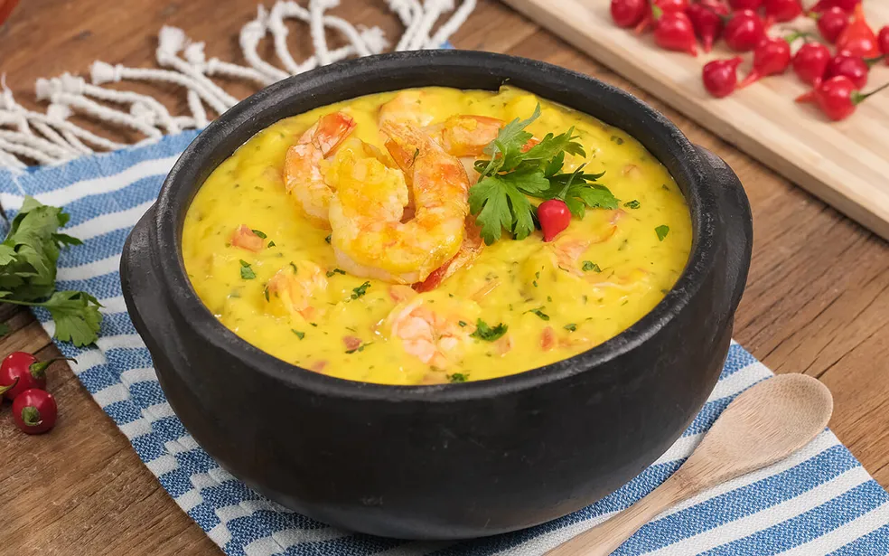

Bobó de Camarão
Sobre a Receita
Bobó de Camarão — prato tradicional da culinária baiana, preparado com camarões refogados em um creme cremoso de mandioca, leite de coco, azeite de dendê e temperos típicos. Servido com arroz branco, o bobó combina textura suave e sabor marcante, sendo uma verdadeira celebração da cultura, da tradição e do sabor da Bahia.

🧾 Ingredientes
- 1 kg de camarão limpo e descascado
- Suco de 1 limão
- Sal e pimenta-do-reino a gosto
- 2 colheres (sopa) de azeite de dendê
- 2 colheres (sopa) de azeite de oliva
- 1 cebola grande picada
- 3 dentes de alho picados
- 1 pimentão vermelho picado
- 1 pimentão amarelo picado
- 3 tomates sem pele e sem sementes, picados
- 200 ml de leite de coco
- 500 g de mandioca (aipim) cozida e amassada
- Cheiro-verde e coentro picados a gosto
- Pimenta-malagueta (opcional, a gosto)
- Arroz branco para acompanhar
👨🍳 Modo de Preparo
- Camarão: tempere os camarões com sal, pimenta-do-reino e suco de limão. Deixe marinar por alguns minutos. Em uma panela, aqueça o azeite de oliva e refogue rapidamente os camarões até mudarem de cor. Retire e reserve.
- Base do bobó: na mesma panela, aqueça o azeite de dendê e refogue a cebola, o alho, os pimentões e os tomates até formar um refogado bem aromático. Acrescente o leite de coco e mexa bem.
- Creme: bata a mandioca cozida com um pouco do caldo do cozimento até obter um purê liso. Junte esse purê ao refogado e misture até formar um creme homogêneo e encorpado.
- Finalização: adicione os camarões reservados, ajuste o sal e, se desejar, acrescente pimenta-malagueta. Cozinhe por mais alguns minutos, apenas para incorporar os sabores. Finalize com cheiro-verde e coentro picados.
- Sirva o bobó de camarão acompanhado de arroz branco, e aproveite toda a cremosidade e o sabor marcante dessa tradicional receita baiana.
⏱️ Preparo
30 minutos
🔥 Tempo de Cozimento
30 a 40 minutos
🕒 Total
aproximadamente 1 hora e 10 minutos
🍘 Rendimento
cerca de 6 a 8 pessoas
💰 Custo Médio
aproximadamente R$ 80 a R$ 150